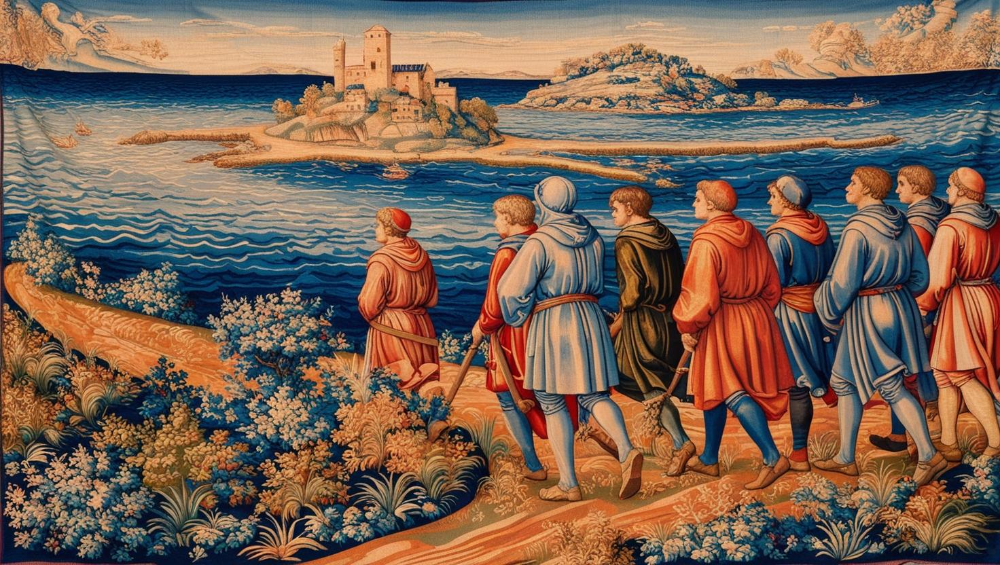
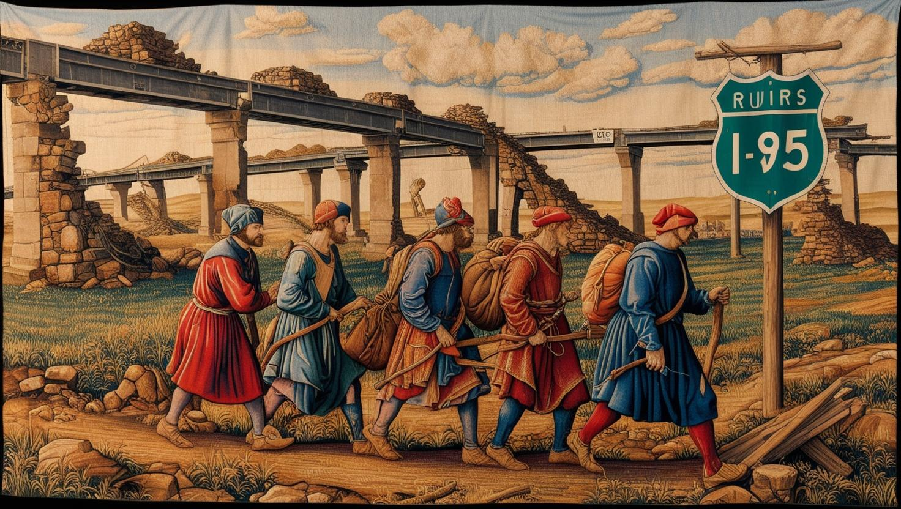
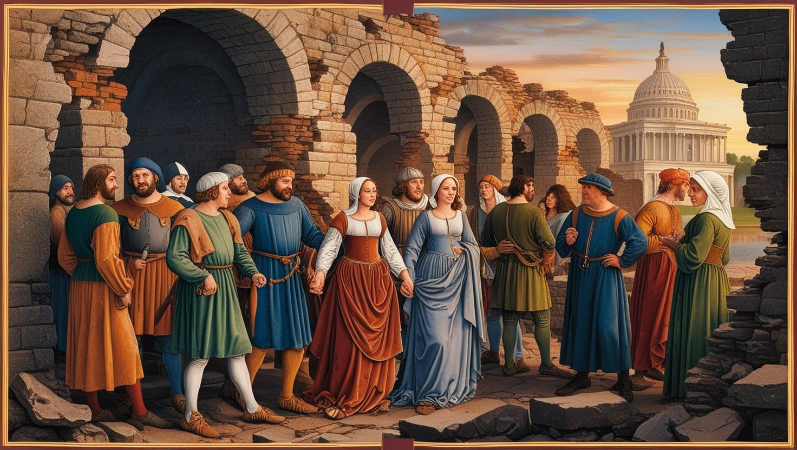
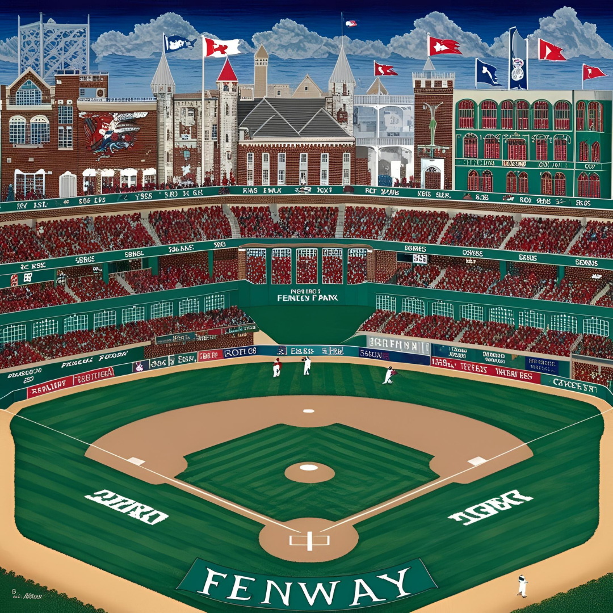

The College of St. James
The Home of Brother Paul Biology and Sister Geat Botany, the College of St. James has
stood since before the Cataclysm, and has maintained its practice of study and meditation since the
Resumption of the Recording of the Years.
- Afforded independence in all affairs by the Duchy of Mann
- Near to the town of Bron's Wick, with which the College trades
- Isolated due to its remoteness and monasticism

A Meditation at the College
The Holy Isle of Acadia
An island of great natural beauty located just off the northern coast of the Duchy of Mann.
- Held holy by the Adamites, the Federal Church, the cultists of the National Park, and the folk
religions of Newing's Land
- A place of common pilgrimage, brings great numbers to Far Harbor on the coast and its market, with
inns, shops, houses of worship,
and baths for much of the year, even in deep winter
- The first destination in Brother Paul's journey

Pilgrims Approaching the Isle
The 95th
The ancient and great coastal road running from the Duchy of Mann to the Keys of the Flower Kings
- Most traveled route in all the lands of the East
- Traditionally held as officially neutral in all conflicts between the princes and priests of This America
- Known as The 95, a name that originates from the World that Came Before

Travelers on the 95
Eternal Columbia
The old capitol of all the lands of This America
- Traditionally the center of the Federal Church
- Re-conquered by the Empire-State only five years prior to Paul's journey
- Still depopulated after the resettlement of most of its population by the King-Governor
- Home to the holiest shrines of This America - the Congress, the Temples of Lincoln and Jefferson,
the palaces of the President-Paramounts, and the Obelisk of Wassingdon

The Forum of Columbia
Manahatta
Once the greatest city of all the world, and still the center of power and influence in the Empire-State
- Former capitol of the Atlantic Union, the predecessor of the Empire-State
- Center of the Cult of Adam
- Re-united with the Baronies of Kings, Queens, Richmond and Bronx by the King-Governor
- Said to be again the most populous city of the whole Eastern Coast, with an estimated hundred
thousand residents just on the Isle of Manahatta

The Tower of the Empire-State
The Suffolk Colony
The oldest settlement of the Mass Bay, founded by the First Elect before even the age of the America-that-Was
- Home of John, Sam, Adam and Revere, heroes of the war with the Fey Countries beyond the waters
- Ruled for centuries by the House Copley and the scholars of the Scarlet Library
- Conquered thirty years before the crowning of the King-Governor by the Elect of Providence, who have
imposed their harsh religious law upon the city in pursuit of recreating the holy commonwealth of the
First Elect, known by the Federal Cult as the Pilgrims

Worship at Fenn from the Stands
The Fortress-Cathedral of In-Pont
The primary residence of the King-Governor of the Empire-State
- The largest fortress between Athens of Carolina and Kebec-on-the-Lorents
- Began construction under the rule of Philip Makedon, father of Moses Adams, and finished
ten years after
Moses Adams' crowning as King-Governor
- Built around a tower from the World that Came Before, which houses mysterious machines
of the America-that-Was
- The location of the King-Governor's upcoming Ceremony of the Restoration of the World,
to which Brother Paul travels.

The Fortress-Cathedral, from the Cliffs Nearby
The Duchy of Alban
The domain of House Hokul, who once were elected the Regents of the Atlantic Union
- Traditionally the center of the Upstate and rival to Manahatta
- Vassal to the Empire-State, though the King-Governor keeps a watchful eye
- Home to the State House and the White Palace, two castles of the America-that-Was and the
best-preserved structures in all the Northeastern lands, with carvings and glasswork estimated
to be a millenium old

The State Fort of Albany
The Papal State of Rome-in-Orleans
Ecclesiastical capitol of the Apostolic Catholic Church of This America
- Home to the Pope-in-Rome-in-Orleans
- Greatest city on the River Mississip
- Center of the Papal State of Rome-in-Orleans, encompassing all the lands of Louisiane and Mississip,
the city of Small Rock in Arkansa, and the port of the Body of Christ in eastern Teksas
- Claims the alliegance of all Catholic parishes in all the lands of This America

The Cathedral of Rome-in-Orleans


{kind=link}
{kind=link}
{kind=link}
{kind=link}